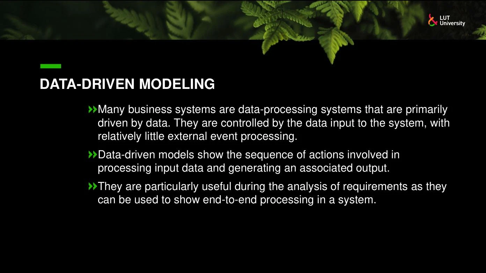
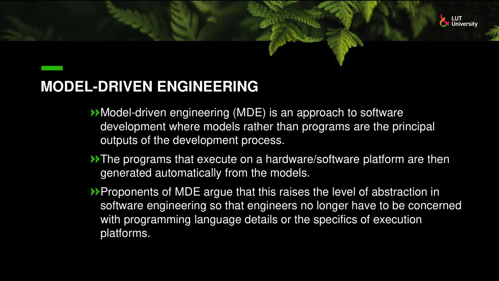
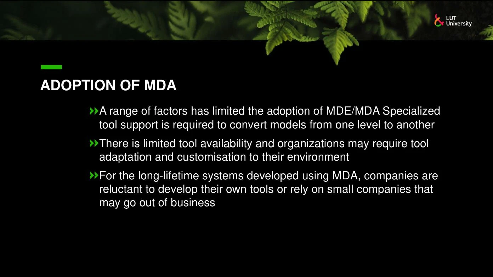
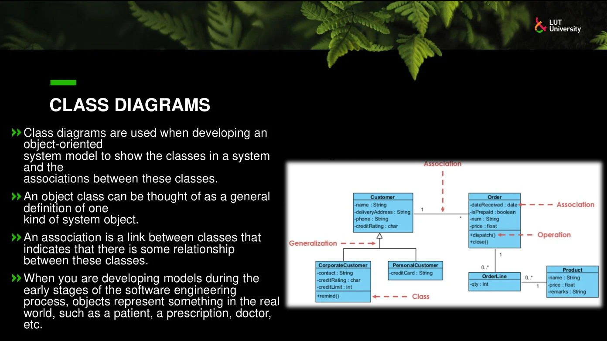

CT60A4050 软件工程基础 · 第 05 / 14 讲
第 5 讲 · 系统建模与 UML
System Modeling and UML
所属章节：第 2 章 需求、建模与架构
资料来源 · 1 项 / 已附 0 项
12_Week 6/1_SE - Lecture 5 - 2026.pdf未附原文件
未附文件仅列原始名称；版本与核对日期由维护者登记。
本节定位
需求讲完「要什么」，建模讲「怎么把它说清楚」。系统建模是用抽象模型从不同视角描述系统，今天几乎都用 UML 表示。这一讲给出四个视角（外部、交互、结构、行为）、五类常用图，以及一种把模型变成代码的激进思路——模型驱动工程（MDE/MDA）。
与前后衔接：本讲的用例图与顺序图是第 4 讲需求表达工具的具体化；类图与状态图为第 6 讲的体系结构设计与第 7 讲的测试提供输入；第 13 讲的项目要求「用例图 + 用例表」，正是本讲的直接应用。
学完本节你应当能够：
- 说出系统建模的定义与建模的三种用途（讨论、文档化、代码生成），并指出各用途对模型正确性/完整性的要求
- 区分四个建模视角，并为给定问题选出合适的视角
- 为给定场景画/描述用例图与顺序图，写清参与者、边界与消息顺序
- 用类图表达类、关联与泛化，并说明泛化如何帮助管理复杂性
- 用状态机描述一个对象对事件的响应，区分状态、事件与迁移
- 解释 MDE 与 MDA 的差别，说出 CIM/PIM/PSM 三层模型及 MDA 采用受限的三个原因
5.1 系统建模是什么
课件定义：“System modeling is the process of developing abstract models of a system, with each model presenting a different view or perspective of that system.”（开发系统的抽象模型，每个模型呈现该系统的一个不同视图或视角。）
课件补充：今天「系统建模」几乎等于「用某种图形符号表示系统」，而这些符号几乎都基于 UML（Unified Modeling Language）。建模的作用是帮助分析人员理解系统功能，并作为与客户沟通的工具。
模型有两种对象：
| 模型对象 | 用途 | 阶段 |
|---|---|---|
| 现有系统的模型 models of the existing system | 澄清现有系统做什么，作为讨论其优缺点的基础，进而引出新系统需求 | 需求工程 |
| 新系统的模型 models of the new system | 向其他干系人解释拟议需求；用于讨论设计方案、记录实现 | 需求工程与设计 |
| 可生成实现的模型 | 在模型驱动工程中，可从模型生成完整或部分的系统实现 | 设计到实现 |
5.2 四个建模视角
| 视角 | 英文 | 建什么 | 常用图 |
|---|---|---|---|
| 外部视角 | external perspective | 系统的上下文或环境 | 上下文模型（系统边界图） |
| 交互视角 | interaction perspective | 系统与环境之间、或系统构件之间的交互 | 用例图、顺序图 |
| 结构视角 | structural perspective | 系统的组织，或系统所处理数据的结构 | 类图、构件图 |
| 行为视角 | behavioral perspective | 系统的动态行为及对事件的响应 | 活动图、状态图 |
5.3 为什么要 UML
课件先讲动机：软件工程师不断寻求自动化生产软件、提升质量、降低成本与上市时间的技术，包括构件技术、可视化编程、模式与框架，以及管理系统规模与复杂度的手段。
另一类问题是要解决反复出现的架构难题：物理分布、并发、复制、安全、负载均衡、容错。课件指出，为万维网开发虽然简化了一些事情，却加剧了这些架构难题。UML 正是为回应这些需求而设计的。
UML 设计的六个主要目标（给干系人提供）：
- 可立即使用、富有表现力的可视化建模语言，以便开发并交换有意义的模型；
- 可扩展、可特化的机制，用于扩展核心概念；
- 独立于特定编程语言与开发过程的通道；
- 理解建模语言的形式基础；
- 对更高层开发概念（协作、框架、模式、构件）的支持；
- 整合最佳实践的基础。
为什么 UML 图这么多？课件解释：因为我们从许多不同视角看系统，而开发中有许多角色不同的干系人——分析师、设计者、编码者、测试者、QA、客户、技术文档作者。每种角色关心不同的视图。
5.4 两类 UML 图
| 类别 | 英文 | 定义 | 包含 |
|---|---|---|---|
| 结构图 | structure diagrams | 展示系统及其各部分在不同抽象与实现层次上的静态结构，以及它们之间的关系；表达系统的有意义概念，可含抽象概念、现实世界概念与实现概念 | 类图、构件图、部署图、对象图、包图 |
| 行为图 | behavior diagrams | 展示系统中对象的动态行为，可描述为随时间发生的一系列系统变化 | 活动图、用例图、顺序图、状态图、通信图 |
课件重点介绍五类图：
| 图 | 英文 | 展示什么 |
|---|---|---|
| 活动图 | activity diagrams | 一个过程或数据处理中涉及的活动（可用于业务流程建模） |
| 用例图 | use case diagrams | 系统与其环境之间的交互 |
| 顺序图 | sequence diagrams | 参与者与系统之间、系统构件之间的交互（含时间顺序） |
| 类图 | class diagrams | 系统中的对象类以及类之间的关联 |
| 状态图 | state diagrams | 系统如何对内部与外部事件作出反应 |
5.5 模型的三类用途与正确性要求
这是本节最容易被简化、但考试很爱考的一张对照：
| 用途 | 对模型的要求 | 原因 |
|---|---|---|
| 促进对现有或拟议系统的讨论 | 不完整、不正确也可以 | 模型的角色是支持讨论，争论过程本身产生价值 |
| 记录现有系统 | 应准确表示系统，但不必完整 | 文档化的目的是让人理解关键结构，不是穷举 |
| 作为可生成实现的详细系统描述 | 必须既正确又完整 | 生成器不会替你补全缺失的语义 |
一句话记法：讨论可以错，文档要准，生成要全。
5.6 系统边界与上下文模型
系统边界（system boundary）用来界定什么在系统内、什么在系统外；上下文模型展示被使用或依赖于本系统的其他系统。关键判断是：边界的位置对系统需求有深刻影响。
课件还给出一个很「社会学」的提醒：确定系统边界是政治判断（political judgment）——可能存在压力，要求把边界划得使某个部门的 influence 或 workload 增大或减小。这一点在答题时可以显著提升深度：边界不是技术事实，而是组织权力的投影。
上下文模型的局限：它只展示环境中的其他系统，不展示本系统在环境中如何被使用。要展示后者，需要过程模型（process model）——过程模型揭示被开发的系统如何在更广的业务流程中被使用，可用 UML 活动图来定义业务流程模型。
5.7 交互模型
课件给出三条理由：建模用户交互有助于识别用户需求；建模系统与系统交互能暴露可能出现的通信问题；建模构件交互帮助判断拟议的系统结构是否可能交付所需的性能与可靠性。工具是用例图与顺序图。
用例建模：用例最初用于支持需求获取，后被纳入 UML。每个用例代表一个涉及与系统外部交互的离散任务；参与者（actor）可以是人，也可以是其他系统；用例既用图给出概览，也用更详细的文本形式描述。图中要画出系统边界，参与者位于边界之外。
顺序图：UML 的一部分，用于建模参与者与系统内对象之间的交互；展示某个用例或用例实例中发生的交互顺序。参与者与对象列在图的顶部，并从它们向下画虚线（生命线）；对象之间的交互用带注释的箭头表示。
5.8 结构模型与类图
结构模型展示系统的组织：由哪些构件组成、构件之间什么关系。它可以是静态模型（展示设计时的结构），也可以是动态模型（展示运行时的组织）。结构模型通常在讨论与设计体系结构时创建。
类图用于面向对象的系统建模：展示系统中的类以及类之间的关联（association）。对象类可理解为一类系统对象的通用定义；关联是类之间的链接，表明它们之间存在某种关系。在早期建模中，对象通常代表现实世界中的事物（患者、处方、医生）。
泛化（generalization）是管理复杂性的日常技术：我们不必学习遇到的每个实体的细节，而是把它们归入更一般的类，学习这些类的特征，从而推断同类成员具有某些共同特征。类图中的泛化用空心三角箭头指向父类。
5.9 行为模型：数据驱动与事件驱动
行为模型是系统执行时动态行为的模型，展示系统响应环境刺激时「发生了什么」或「应该发生什么」。刺激有两类：数据（到达并需被处理的数据）与事件（触发系统处理的事件，事件可能带数据，也可能不带）。
| 类型 | 适用系统 | 建模方式 | 例子 |
|---|---|---|---|
| 数据驱动建模 data-driven modeling | 以数据处理为主、外部事件处理较少的业务系统 | 展示处理输入数据并生成输出的动作序列；适合在需求分析中展示端到端处理 | 工资结算、保单生成 |
| 事件驱动建模 event-driven modeling | 实时系统，数据处理极少 | 基于「系统有有限个状态、事件可引起状态迁移」的假设 | 电话交换机：摘机 → 拨号音 |
状态机模型：建模系统对外部与内部事件的响应行为；展示系统对刺激的响应，常用于实时系统建模；把系统状态画成节点、事件画成节点之间的弧；事件发生时，系统从一个状态迁移到另一个状态。UML 中的状态图（statecharts）是状态机模型的表示法。
5.10 模型驱动工程 MDE
MDE 是一种开发方式：模型而非程序是开发过程的主要产出；在硬件/软件平台上执行的程序由模型自动生成。支持者认为这提升了软件工程的抽象层次，使工程师不必再关心编程语言细节或执行平台的具体特性。
MDA（Model-Driven Architecture）是更一般的 MDE 的前身：一种以模型为中心的软件设计与实现方法，使用 UML 模型的一个子集描述系统；在不同抽象层次上创建模型，理论上可以从高层的平台无关模型生成可工作程序而无需人工干预。
三层模型（必须能区分）：
| 模型 | 英文 | 描述什么 | 别名/说明 |
|---|---|---|---|
| 计算无关模型 | CIM（computation independent model） | 系统中重要的领域抽象 | 也称领域模型 domain model |
| 平台无关模型 | PIM（platform independent model） | 系统的运行方式，不涉及实现 | 通常用 UML 描述静态结构与对内外事件的响应 |
| 平台相关模型 | PSM（platform specific model） | 由 PIM 转换而来，针对每个应用平台各有一份 | 理论上可有多层 PSM，每层增加平台相关细节 |
MDA 采用受限的三个原因：需要专门工具支持在层次间转换模型；工具可得性有限，组织可能需要改造与定制工具以适配自身环境；对于用 MDA 开发的长寿命系统，公司不愿自建工具，也不愿依赖可能倒闭的小公司。
MDA 与敏捷的关系：MDA 的开发者声称它支持迭代开发，因而可用于敏捷；但「大量前期建模」与敏捷宣言的基本理念矛盾，敏捷开发者对 MDE 感到不适。课件给出一个条件性结论：若转换能完全自动化、能从 PIM 生成完整程序，那么原则上 MDA 可用于敏捷过程，因为不再需要单独编码。
UML 图多，是因为视角与角色多，不是画得越全越好。四个视角可记成四问：它和谁相邻（外部）、和谁说话（交互）、由什么组成（结构）、随时间怎么变（行为）。决定图该多精确的，是模型的用途：用于讨论时不必完整甚至可暂不正确，争论本身有价值；用于记录现有系统要准但不必全；用于生成实现则必须既正确又完整，因为生成器不会补缺失语义。一句话是讨论可错、文档要准、生成要全。系统边界位置会深刻影响需求，界定它其实是政治判断。
原版图页（源 PDF 插图页）








| English | 中文 | 说明 / 例句 |
|---|---|---|
| system modeling | 系统建模 | Developing abstract models, each presenting a different view of the system. |
| UML | 统一建模语言 | A standard graphical notation; structure diagrams and behaviour diagrams. |
| context model | 上下文模型 | Shows the other systems in the environment of the system being developed. |
| process model | 过程模型（业务） | Shows how the system is used in broader business processes; often an activity diagram. |
| system boundary | 系统边界 | Defines what is inside and outside the system; a political judgment. |
| use case diagram | 用例图 | Shows interactions between a system and its environment; actors outside the boundary. |
| sequence diagram | 顺序图 | Shows the sequence of interactions among actors and objects during a use case. |
| class diagram | 类图 | Shows object classes and the associations between them. |
| association | 关联 | A link between classes indicating some relationship. |
| generalization | 泛化 | Placing entities into more general classes to manage complexity. |
| state machine model | 状态机模型 | States as nodes, events as arcs; a statechart in UML. |
| data-driven modeling | 数据驱动建模 | Models the sequence of actions processing input data into output. |
| event-driven modeling | 事件驱动建模 | Models how the system responds to external and internal events. |
| model-driven engineering | 模型驱动工程 | Models, not programs, are the principal outputs; programs are generated. |
| MDA | 模型驱动架构 | Model-focused design using a subset of UML; CIM, PIM, PSM. |
| PIM | 平台无关模型 | Models the operation of the system without reference to its implementation. |
情境：某团队要做一个「图书馆自助借还」系统。四个问题：① 系统要与学校的统一身份认证、短信网关、财务系统对接，接口边界在哪？② 学生借书时，系统与自助机、后台服务之间按什么顺序交互？③ 系统里有哪些主要对象，它们之间什么关系？④ 一本书从「在架」到「借出」再到「丢失赔偿」，状态如何变化？请为每个问题选视角与图。
分析：逐题抓关键词——「边界/对接」是外部视角；「按什么顺序」是交互视角；「有哪些对象/关系」是结构视角；「状态如何变化」是行为视角。
① 外部视角 + 上下文模型：画出系统边界，边界外放统一身份认证、短信网关、财务系统，标注数据流向。注意课件提醒：边界位置是政治判断，若把「短信通知」划进系统内，就要承担短信失败的责任。
② 交互视角 + 顺序图：参与者「学生」、对象「自助机界面」「借阅服务」「库存服务」「通知服务」，按时间顺序画消息：扫码 → 校验身份 → 查询可借 → 创建借阅记录 → 更新库存 → 发送凭条。
③ 结构视角 + 类图：Book、Copy（馆藏副本）、Loan、Member、Fine；关联：Member 1—* Loan，Loan *—1 Copy，Copy *—1 Book。
④ 行为视角 + 状态图：状态 InShelf、OnLoan、Overdue、Lost、Damaged；事件 borrow、return、renew、reportLost、payFine；迁移带守卫条件（如 renew 仅在未逾期时允许）。
检查：四个模型是否互相矛盾？例如类图里 Copy 有状态字段，状态图的状态集合必须与之一致——这是一致性检查的典型做法。
情境：在线课程平台，学生可以「申请延期提交作业」。请写一个用例表，并描述对应的顺序图。
用例表：ID：UC-7；名称与版本：申请作业延期，v1；参与者：学生（主要）、教师（次要）；前置条件：学生已登录、已选修该课程、作业未截止或截止未超过 7 天；描述：学生在作业页点击「申请延期」→ 选择新截止日期并填写理由 → 提交；系统校验新日期不超过课程结束日 → 生成申请单并通知教师；异常：新日期超过课程结束日则拒绝并提示；理由为空则拒绝；同一作业已有待审申请则提示不可重复提交；结果：生成一条状态为「待审」的延期申请，教师收到通知；其他需求：需网络连接；通知在 30 秒内送达。
顺序图：顶部列 Student、AssignmentPage、ExtensionService、NotificationService、Teacher。消息顺序：① Student → AssignmentPage：requestExtension(newDate, reason)；② AssignmentPage → ExtensionService：validate(newDate, reason)；③ ExtensionService → ExtensionService：checkCourseEnd(newDate)（自调用，表示内部校验）；④ ExtensionService → AssignmentPage：OK / Error；⑤ AssignmentPage → ExtensionService：createRequest()；⑥ ExtensionService → NotificationService：notify(teacher, requestId)；⑦ NotificationService → Teacher：sendNotification()。
要点：顺序图只画「成功路径」不够，专业做法是用 alt 片段画异常分支（校验失败时直接返回错误，不创建申请）。
情境：某停车场系统有 Vehicle、Car、Truck、Motorcycle 四类对象；车位有 Free、Occupied、Reserved、OutOfService 四个状态。请说明类图中的泛化关系，并写出一个状态迁移表（至少 5 条迁移）。
泛化：Car、Truck、Motorcycle 都泛化为 Vehicle；Vehicle 拥有公共属性（车牌、入场时间）与公共操作（assignSpace、calculateFee），子类特化费率计算（Truck 按轴数、Motorcycle 按次）。这样费率规则变化时只改子类，不改公共逻辑——这正是「管理复杂性」的含义。
状态迁移表：
| 当前状态 | 事件 | 守卫条件 | 下一状态 | 动作 |
|---|---|---|---|---|
| Free | reserve | 会员预约 | Reserved | 锁定车位 15 分钟 |
| Reserved | arrive | 15 分钟内 | Occupied | 开始计费 |
| Reserved | timeout | 超过 15 分钟 | Free | 释放并通知 |
| Occupied | leave | 费用已结清 | Free | 结束计费、抬杆 |
| Occupied | markFault | 设备故障 | OutOfService | 停止计费并派单 |
| OutOfService | repairDone | 维修完成 | Free | 恢复可用 |
检查：是否有「不可达状态」或「无法退出的状态」？OutOfService 必须有出口（repairDone），否则车位永久失效——这是状态机建模的常见缺陷。
情境：某保险公司要用 MDA 生成理赔系统。请分别举例说明 CIM、PIM、PSM 三层的内容，并说明为什么该公司可能最终放弃 MDA。
CIM：「理赔案件」「保单」「受益人」「免赔额」等领域概念及其业务规则（如「同一事故 24 小时内仅可立案一次」）。这是业务人员能读懂的领域模型。
PIM：用 UML 描述系统静态结构与行为——ClaimService 的接口、Claim 的状态机（Submitted → UnderReview → Approved/Rejected → Paid），不涉及 Java 还是 C#、不涉及数据库类型。
PSM：针对 Java EE 平台生成 ClaimServiceBean、JPA 实体、消息队列配置；若还要支持 .NET 平台，则另有一份 PSM。
为什么可能放弃：① 需要专门的模型转换工具，且要定制到公司环境；② 工具供应商多为小公司，长寿命系统不愿依赖；③ 生成的代码在性能与可维护性上未必达标，最后仍需手写；④ 保险业规则频繁变化，维护模型的成本可能高于维护代码。这正是课件所说「工具可得性有限 + 组织不愿依赖小公司」的现实版本。
- 系统建模的四个视角是什么？各举一个 UML 图。
- 判断：用于讨论的模型必须完整且正确。（对/错，说明理由）
- 上下文模型与过程模型的区别是什么？为什么需要过程模型？
- 用例图能否表达「先登录再下单」的顺序？如果不能，应改用什么图？
- 写出状态图中「状态」「事件」「迁移」的定义，并说明守卫条件（guard）的作用。
- MDE 与 MDA 的关系是什么？CIM、PIM、PSM 各描述什么？
参考答案与思路
1. 外部（上下文模型/系统边界图）、交互（用例图、顺序图）、结构（类图）、行为（状态图、活动图）。
2. 错。课件明确：作为讨论手段时，模型不完整、不正确也可以，因为其作用是支持讨论；只有作为「可生成实现的详细描述」时才必须既正确又完整。
3. 上下文模型只展示环境中的其他系统，不展示本系统如何被使用；过程模型展示系统在更广业务流程中的使用方式（常用活动图），因此能揭示跨系统的业务顺序与职责边界。
4. 不能。用例图只表达参与者与用例的关联，不表达时序；时序用顺序图（或活动图）表达。
5. 状态是系统在某一时刻的情形；事件是触发处理的外部或内部刺激；迁移是事件导致的从一状态到另一状态的变化。守卫条件是对迁移是否允许的布尔约束（如「仅当未逾期」），使同一事件在不同条件下走向不同状态。
6. MDA 是 MDE 的前身与一个具体流派：MDE 泛指以模型为主要产出、自动生成程序；MDA 特指用 UML 子集 + CIM/PIM/PSM 分层转换。CIM 描述领域抽象，PIM 描述与平台无关的运行方式，PSM 描述特定平台上的实现细节。
建模的清单
- 明确建模目的：讨论 / 文档化 / 生成代码（决定正确性与完整性要求）
- 选视角：外部 → 交互 → 结构 → 行为
- 画系统边界，并把边界外的系统/角色列全（注意边界的组织含义）
- 用用例图列出参与者与离散任务，每个用例配一张表（前置、异常、结果）
- 用顺序图表达关键用例的时序，务必画异常分支（alt）
- 用类图表达对象、关联与泛化，标注多重性
- 用状态图表达对象生命周期，检查不可达状态与无出口状态
- 做一致性检查：图与图之间的名称、状态、关系必须对得上
| 源文件 | 页码 | 覆盖知识点 |
|---|---|---|
| 12_Week 6/1_SE - Lecture 5 - 2026.pdf | p3–p6 | 学习目标、系统建模定义、现有/新系统模型、四个视角 |
| 12_Week 6/1_SE - Lecture 5 - 2026.pdf | p7–p13 | UML 的动机与设计目标、干系人角色、结构图与行为图 |
| 12_Week 6/1_SE - Lecture 5 - 2026.pdf | p14–p17 | 五类图、模型三类用途与正确性要求、系统边界与政治判断、过程模型 |
| 12_Week 6/1_SE - Lecture 5 - 2026.pdf | p18–p23 | 交互模型、用例建模、顺序图、结构模型、类图与关联、泛化 |
| 12_Week 6/1_SE - Lecture 5 - 2026.pdf | p24–p27 | 行为模型、数据驱动与事件驱动、状态机模型 |
| 12_Week 6/1_SE - Lecture 5 - 2026.pdf | p28–p32 | MDE、MDA、CIM/PIM/PSM、MDA 采用受限的原因、与敏捷的关系 |
| （跳过） | — | 本周无纯图片或行政页需跳过 |
| （补充） | — | UML 图清单中的构件图/部署图/对象图/包图按 UML 标准补足；课件只列五类重点图 |